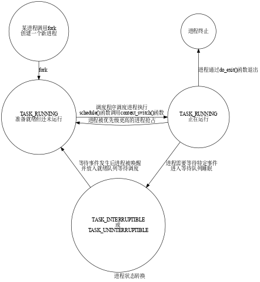
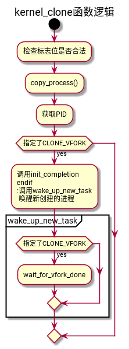

进程管理
Table of Contents
1 进程
进程是程序执行的一个实例，从内核的观点来看，进程用来充当系统分配资源的实体。
现代操作系统都可以同时运行若干个进程，但这只是计算机给我们的错觉，如果系统中只有一个处理器，则某一时刻，只有一个进程可以执行。多处理器中，可以同时运行进程的个数取决于处理器的数量。
内核和处理器给我们建立了多任务同时运行的错觉，本质上是通过在短时间内，对多个进程进行切换而实现的，由于时间较短，我们无法注意到操作系统中的进程切换导致的短暂停滞，所以看起来像是多个任务同时运行。
进程和程序的区别：
程序时一堆代码和数据，可以作为目标文件存在与磁盘上，或者作为段存在于地址空间中。
进程是程序执行的一个具体的实例，程序总是运行在某个进程的上下文中。
1.1 进程的优先级
- 硬实时进程
- 对时间有严格的限制，必须在指定的时间限内完成。例如飞机的飞行控制命令。
- 软实时进程
- 硬实时进程的一种弱化形式，虽然也需要尽快得到结果，但是稍晚一点，不会造成重大事故。例如CD的写如，必须保证某一速率，否则，会导致CD不可用。
- 普通进程
- 没有特定的时间约束，但是仍可以根据重要性来分配优先级。例如编译进程和交互式进程。
1.2 进程状态
进程并不总是可以立即运行，而是需要等待外部的信号或者事件，例如在文本编辑器中等待键盘输入。
- 可运行状态（TASK_RUNNING）
- 进程要么在CPU上执行，要么准备执行（等待CPU调度）。
- 可中断等待状态（TASK_INTERRUPTIBLE）
- 进程被挂起，直到某个条件变为真。硬件中断，释放进程等待的系统资源，或者传递信号都是可以唤醒该状态下进程的条件。
- 不可中断的等待状态（TASK_UNINTERRUPTIBLE）
- 与可中断等待状态类似，但是向其传递信号不能改变进程状态。
- 暂停状态（TASK_STOPPED）
- 进程被暂停，当进程受到SIGSTOP、SIGTSTP、SIGTTIN或者SIGTTOU信号后，进入暂停状态。
- 跟踪状态（TASK_TRACED）
- 进程的执行被debbugger程序暂停。当一个进程被另一个进程监控（debugger执行ptrace系统调用监控一个测试程序），任何信号都可以把这个进程置为TASK_TRACED状态。
- 僵死状态（TASK_ZOMBIE）
- 进程的执行被终止，但是父进程没有通过wait4()或者waitpid()系统调用来返回进程死亡的信息。在发布wait()类系统调用前，内核不能丢弃进程描述符的数据，父进程可能还需要此数据。
- 僵死撤销状态（EXIT_DEAD）
- 最终状态：父进程刚发出wait4()或waitpid()系统调用，之后进程被系统删除。

1.3 内核抢占
linux进程管理结构中还需要另外两种进程状态：内核态和用户态。这反映出现代CPU至少有两种不同的执行状态，一个具有全部的权限，另一个会受到很多限制。
进程通常处于用户态，只能访问自身数据，无法干扰其他进程。
如果进程想要访问系统数据或者功能，则必须切换到内核态，可以通过系统调用或者中断实现。系统调用是由程序有意调用的，中断则不同，其发生是不可预测的。处理中断的操作通常与中断发生时执行的进无关。例如，在块设备向内存传输完数据会引发中断网卡的网络数据引发的中断，此时可能执行任意进程。
内核的抢占调度模型建立了一个层次结构，用于判断哪些进程状态可以由其他进程状态抢占。
- 普通进程总是可以被抢占。当一个重要进程变为可运行时，调度器可以决定是否立即执行该进程。
- 如果系统处于核心态执行系统调用，系统中的其他进程无法夺取其CPU时间。调度器必须等到系统调用执行结束，才可以选择其他进程执行，但是中断可以中止系统调用。
- 中断可以暂停处于用户态和核心态的进程。由于中断触发后需要尽快处理，所以中断具有最高的优先级。
内核抢占 功能允许紧急情况下切换到另一个进程，甚至当前是处于核心态执行系统调用（中断处理时不行）。
1.4 标识进程
操作系统使用PID（进程ID）来标识进程，PID存放在进程描述符的pid字段。
通过/proc/sys/kernel/pid_max可以查看当前PID的最大值，可以通过向文件写入值来更改PID最大值。
POSIX标准规定一个多线程应用中的所有线程都必须由相同的PID，linux中一个线程组中的所有线程使用和该线程组的领头线程相同的PID，它被存入进程描述符的tgid字段，getpid()系统调用返回当前进程的tgid值，因此多线程应用的所有线程共享相同的PID。
1.5 进程描述符
进程描述符中包含的数据能完整的描述一个正在执行的程序：其打开的文件，进程的地址空间，挂起的信号，进程的状态等等。
1.6 进程的参数、环境变量和用户栈


1.7 进程的创建
1.7.1 进程的写时复制
在使用fork创建子进程时，子进程和父进程共享地址空间，当父进程或者子进程需要写入的时候，才会复制数据。这么做可以避免一些不必要的复制，而且很多时候，在fork之后，会立即执行exec，之前的拷贝都是无用功。
1.7.2 fork
fork调用最终是通过kernel_clone()函数来实现的， kernel_clone又会调用copy_process()函数。
kernel_clone

在调用copy_process生成子进程的数据之后，内核还需要作以下操作：
- 由于fork需要返回子进程的pid，所以需要获取PID。如果指定创建新的PID命名空间，则pid_vnr()返回命名空间对应的PID。
- 通过wake_up_new_task唤醒子进程，也就是直接将子进程的task_struct添加到调度队列。
- 如果使用了vfork，必须启用子进程的completions机制，通过task_struct的vfork_done成员来实现，父进程在该变量上睡眠，直到子进程退出。 通过这种方法，可以确保使用vfork生成的子进程的父进程一直处于不活动的状态，直至子进程退出，或者执行一个新的程序。父进程的临时睡眠状态，也确保两个进程不会彼此干扰或操作对方的地址空间。
copy_process

1.8 内核线程
内核线程是直接有内核本身启动的进程。内核线程实际上是将内核函数委托给独立的进程，与系统中的其他进程一起运行。内核线程通常成为内核守护进程。
内核线程一般用于执行以下任务：
- 周期性的将修改过的内存页和页的来源块设备同步（例如mmap的文件映射）。
- 如果内存页较少使用，将其写入交换分区。
- 管理延时操作。
- 实现文件系统的事物日志。
内核线程可以分为两种类型：
- 线程启动后一直等待，直到内核请求线程执行某一个特定操作。
- 线程启动后周期性的间隔运行，检测特定资源的使用，在超出或者地狱预设的限制时，执行操作。
内核线程的创建函数：
/** * 在当前node创建内核线程 * @threadfn: 内核线程将要执行的函数 * @data: 传递给 @threadfn()函数的参数指针 * @namefmt: 内核线程的名称格式 * @arg...: @namefmt的参数 * * 该函数创建内核线程后，不会立即运行，需要通过wake_up_process函数启动。 */ #define kthread_create(threadfn, data, namefmt, arg...) \ kthread_create_on_node(threadfn, data, NUMA_NO_NODE, namefmt, ##arg) /** * 创建内核线程并运行 * @threadfn: 将要运行的函数，直到被signal_pending(current)终止. * @data: @threadfn参数指针 * @namefmt: 线程名称格式 * */ #define kthread_run(threadfn, data, namefmt, ...) \ ({ \ struct task_struct *__k \ = kthread_create(threadfn, data, namefmt, ## __VA_ARGS__); \ if (!IS_ERR(__k)) \ wake_up_process(__k); \ __k; \ })
内核线程是运行在内核态而非用户态，所以只能访问虚拟地址空间的内核部分。
内核线程不需要和任何特定的用户进程相关，所以内核并不需要切换虚拟地址空间的用户空间（task_struct的mm成员指向）。由于内核线程之前可能是任意用户进程执行，内核线程不能修改其内容，为了强调用户空间部分不能访问，将task_struct的mm成员设置为空，而将active_mm指向用户空间的mm_struct。
2 操作进程的工具
- STRACE
- 打印一个正在运行的进程和它的子进程调用的每个系统调用的轨迹。使用
-static编译程序会的高一个更加干净的、不带有大量动态库的输出轨迹。 - PS
- 列出当前系统中的进程
- TOP
- 打印出关于当前进程资源的使用信息
- PMAP
- 显示进程的内存映射
- /proc
- 虚拟文件系统，以ASCII文本格式输出大量内核数据结构的内容，用户可以读取这些内容。
3 进程管理
3.1 核心调度器
3.1.1 周期性调度器
周期性调度器由 scheduler_tick 函数实现.
内核按照频率HZ自动调用该函数
- 管理内核中与整个系统和各个进程的调度相关的统计量
- 激活负责当前进程的调度类的周期性调度方法
3.1.2 主调度器
schedule();
__sched 前缀用于可能调用schedule的函数.
context_switch
3.1.3 fork交互
3.1.4 上下文切换
内核为每个进程维持一个上下文。上下文就是内核重新启动一个被抢占的进程所需的状态，由一些对象值组成，包括通用亩的寄存器、浮点寄存器、程序计数器、用户栈、状态寄存器、内核栈和各种内核数据结构（例如描述地址空间的页表、宝航当前进程信息的进程表，进程已打开文件的文件表）。
某一时刻，内核决定使用先前的一个被抢占的进程来抢占当前进程，这种决策叫调度。内核选择一个新的进程运行，称之为内核调度了这个进程。内核调度新进程运行后使用 上下文切换 的机制来将控制权转移到新的进程。上下文切换过程：
- 保存当前进程的上下文
- 恢复某个先前被抢占的进程的上下文
- 将控制权传递给新进程
context_switch
调用 switch_to 之前: A >>> B; prev = A, next = B B >>> C; prev = B, next = C C >>> A; prev = C, next = A
当再次调度到A时, 需要让A进程知道上次运行的进程是C. 为了让A进程知道是从C进程切换过来的, 使用switch_to宏, 可以理解为switch_to是带有两个参数的宏, 返回一个指向此前运行进程的指针.本质上等同与一下逻辑: prev = switch_to(prev, next);
3.2 完全公平调度类
/* * All the scheduling class methods: */ static const struct sched_class fair_sched_class = { .next = &idle_sched_class, .enqueue_task = enqueue_task_fair, .dequeue_task = dequeue_task_fair, .yield_task = yield_task_fair, .check_preempt_curr = check_preempt_wakeup, .pick_next_task = pick_next_task_fair, .put_prev_task = put_prev_task_fair, #ifdef CONFIG_SMP .load_balance = load_balance_fair, .move_one_task = move_one_task_fair, #endif .set_curr_task = set_curr_task_fair, .task_tick = task_tick_fair, .task_new = task_new_fair, };
3.2.1 数据结构
3.2.2 CFS操作
3.3 实时调度类
/* *INDENT-OFF* */ const struct sched_class rt_sched_class = { .next = &fair_sched_class, .enqueue_task = enqueue_task_rt, .dequeue_task = dequeue_task_rt, .yield_task = yield_task_rt, .check_preempt_curr = check_preempt_curr_rt, .pick_next_task = pick_next_task_rt, .put_prev_task = put_prev_task_rt, #ifdef CONFIG_SMP .load_balance = load_balance_rt, .move_one_task = move_one_task_rt, #endif .set_curr_task = set_curr_task_rt, .task_tick = task_tick_rt, }; /* *INDENT-ON* */
3.4 内核抢占
struct thread_info { ... int preempt_count; /* 0 => 可抢占, <0 => BUG */ ... };
成员preempt_count值为0, 可以被抢占, 否则不行.